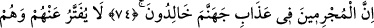
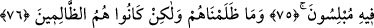

EY MÂLİK!
RABBİN BİZİM İŞİMİZİ BİTİRSİN!
74. Şüphesiz suçlular cehennem azâbında devamlı kalacaklar,
75. Azapları hafifletilmeyecektir. Onlar azap içinde kurtuluştan ümid
kesmişlerdir.
76. Biz onlara zulmetmedik, fakat onlar kendileri zalim kimselerdir.
77. Ey Mâlik! Rabbin bizim işimizi bitirsin! diye seslenirler. Mâlik de: Siz böyle
kalacaksınız! der.
78. Andolsun biz size hakkı getirdik, fakat çoğunuz haktan hoşlanmıyorsunuz.
79. Yoksa (müşrikler) bir işe kesin karar mı verdiler? Doğrusu biz de kararlıyız!
80. Yoksa onlar, bizim kendilerinin sırlarını ve gizli konuşmalarını işitmediğimizi
mi sanıyorlar? Hayır, öyle değil; yanlarındaki elçilerimiz (hafaza melekleri de)
yazmaktadırlar.
“Şüphesiz suçlular,” suç işlemekte iyice ileri giden kâfirler “cehennem azâbında
devamlı kalacaklardır.”
“Mücrimler”in, âyetlere inanan müminlere mukabil olarak getirilmeleri, bunlardan
kasdedilenlerin kâfirler olduğuna işâret etmektedir.
Bu kâfirlerin azâbı hiç kesilmeyecek ve asla son bulmayacaktır. Halbuki âsî müminler
cehenneme girdikleri takdirde, bir müddet cezâlarını çekip oradan çıkacaklar ve
azapları sona erecektir.
75. Azapları hafifletilmeyecektir. Onlar azap içinde kurtuluştan ümid
kesmişlerdir.